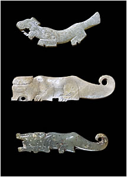

Jade OrnamentsThis servant has been buried with a number of jade ornaments. The ornaments are quite small as larger jade ornaments would have been too expensive. They are quite roughly carved and may depict two dragons. These are similar carvings of tigers from the Shang dynasty. Here are some other carvings of animals from the Shang dynasty. |